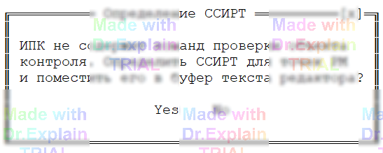
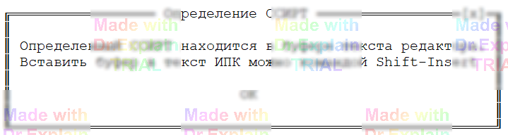

6. Автоматизированная разработка программ контроля
Функция ПОАСК позволяет автоматически получить ССИРТ (структуру соединений исправного объекта контроля) и вставить её в текст ПК, если у вас на столе есть заведомо исправный образец ОК, состоящий только из проводников (жгут, кабель, печатная плата без активных/коммутационных элементов).
Когда применять
- Типовой кабель/жгут с известными обозначениями точек, но без готового списка соединений в ПК.
- Хотите быстро получить достоверный эталон соединений прямо с реального исправного образца.
Исходные данные
- Обозначения всех точек ОК.
- Схема их подключения к входам АСК (определите через команду РМ).
Минимальная «пустая» ПК для автогенерации
ПК должна содержать только служебные директивы и отсутствие реальных команд проверки.
- ОК — описание объекта и комментарий.
- РМ — связывание точек ОК с входами АСК.
- КЦ — конец программы.
- Допускаются: СП, ВШ, ЦУ (при необходимости).
ОК Кабель_ABC * автоопределение ССИРТ
РМ X1:... == ... // ваши реальные привязки
X2:... == ...
КЦ
Запуск и автоматическое определение
- Транслируйте и запустите ПК как обычно.
- ПОАСК обнаружит отсутствие команд проверки и спросит, надо ли автоматически определить ССИРТ (см. рис. 6.1).
- При подтверждении будет выполнен алгоритм выявления соединений методом накапливающего узла с использованием команды ПЭ.

Результат
- Полученный ССИРТ выводится в протокол выполнения.
- Текст ССИРТ копируется в буфер редактора.
- Выполнение ПК завершается, открывается окно исходной ПК, курсор устанавливается на строку КЦ, и выводится напоминание вставить ССИРТ (см. рис. 6.2).

Дальнейшие действия разработчика
- Вставьте ССИРТ в аргументы первой контрольной команды — обычно ПР (прозвон) или при необходимости ПЭ.
- Добавьте команды проверки изоляции: СИ или ПИ.
- При повторном использовании ССИРТ в последующих командах можно ссылаться на него через ключ П или оператор ссылки ^, чтобы не дублировать длинный список точек.
Упрощённый шаблон после автогенерации
ОК Кабель_ABC * автоопределение ССИРТ
РМ X1:... == ...
X2:... == ...
10 ПР *...ССИРТ_вставлен_сюда...*
20 СИ П ^ // пример: проверка изоляции по ссылке на ССИРТ
30 КЦ
Подсказки
- Перед автодетектом убедитесь, что образец действительно исправен — ошибки в эталоне «пропечатаются» в вашу ПК.
- Если список очень длинный, сразу используйте ссылку ^ в последующих строках, чтобы облегчить сопровождение.
-
После вставки ССИРТ можно вручную сгруппировать контакты, добавить макросы
for/macro, или переименовать точки для читаемости — структура соединений уже известна.